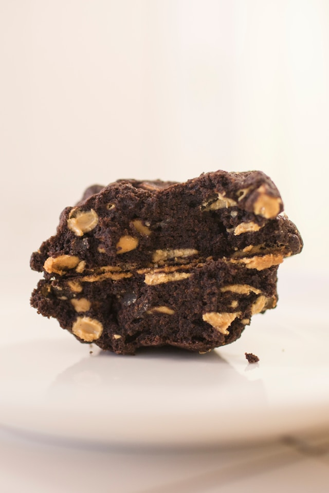

Chocolate Peanut Butter Chip Cookies Recipe

Photo by Claire
Kang on Unsplash
Description
My #1 cookie recipe! A delicious, fudgy, rich chocolate cookie loaded with peanut butter chips.
You can totally
substitute the peanut butter chips for any chips you like (mint are a popular choice).
Ingredients
- 450g Butter
- 600g Sugar, white
- 5g Salt
- 4 Eggs
- 25g Vanilla Extract
- 480g AP Flour
- 160g Cocoa Powder, dutch processed
- 3g Baking Soda
- 425g Peanut Butter Chips
Steps
- In mixer bowl, cream together butter, sugar, and salt using the paddle attachment on medium-high speed until
creamed.
- Mix in eggs and vanilla.
- In a seperate bowl, combine flour, cocoa, and baking soda.
- Mix dry ingredients into wet ones until just combined.
- Fold in chips.
- Optional: Refridgerate overnight (up to 3 days)
- Drop heaping tablespoons of dough (30g each) onto baking sheets at least 2 inches apart.
- Bake for 8 to 10 minutes, until cookies are just set.
- Cool 5 minutes on pan then transfer to wire racks.
See All Recipes